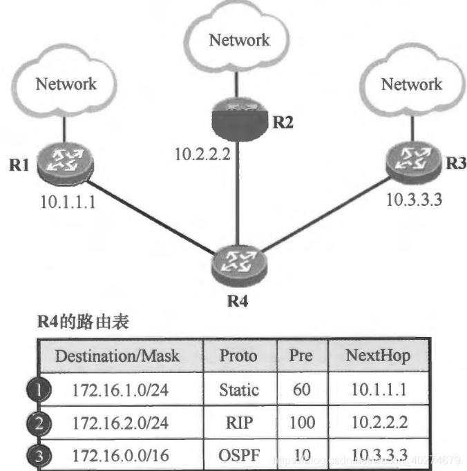
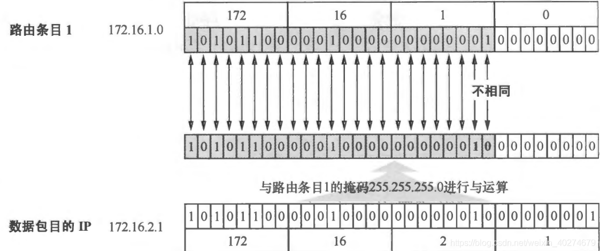
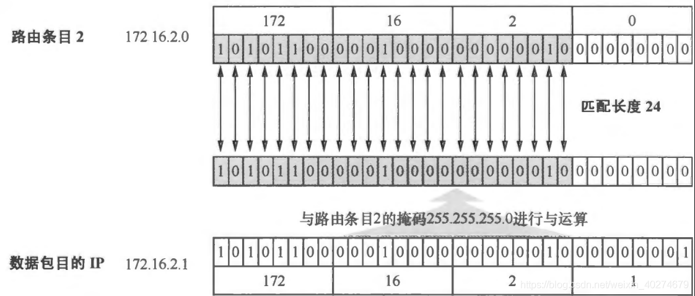
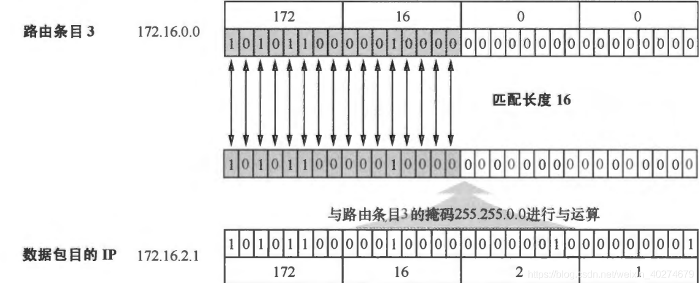

这里是摘要
IP基础知识
原始IP地址表示
格式：32位正整数，点分十进制方便记忆
分类：ABCDE，D类是多播地址（用于将包发给特定组内的所有主机），E类留用。ABCDE类前两位分别为0，10，110，1110，1111
特殊IP地址：主机号全为1——指定某个网络下所有主机，用于广播；主机号全为0——指定某个网络
多播地址：
- 224.0.0.0 ~ 224.0.0.255 为预留的组播地址，只能在局域网中，路由器是不会进行转发的。
- 224.0.1.0 ~ 238.255.255.255 为用户可用的组播地址，可以用于 Internet 上。
- 239.0.0.0 ~ 239.255.255.255 为本地管理组播地址，可供内部网在内部使用，仅在特定的本地范围内有效。
IP地址分类的优缺点：
- 通过最多前4位就能确定地址类型，然后进而能够快速划分网络号和主机号，简单明了
- 同一网络下没有地址层次，灵活性不足
- 与现实网络的匹配度不好，C类地址一个网络下只有200+个，而B类地址一个网络下6W+个
子网划分
子网是指在网络号的基础上，进一步将网络内主机进行划分，所以需要从主机号中借用若干位作为子网号。要使用子网，必须配置子网掩码。子网掩码中对应网络号（默认网络号+子网网络号）的位全为1。
基本的子网划分中，比如借走两位主机号，只能划分4-2=2个子网，这是因为全0和全1不使用。
外界是感知不到子网的存在的

无分类编址CIDR（Classless Inter-Domain Routing）
不再对地址类型进行区分，也没有划分子网的概念
32位IP总共有两部分组成：网络前缀+主机号
表示形式：a.b.c.d/x，其中x说明前x位是网络前缀
CIDR中不会将主机号全0和全1的地址排除不使用
CIDR表示法给出任何一个IP地址，就相当于给出了一个CIDR地址块，这是由连续的IP地址组成的，所以CIDR表示法构成了超网，实现了路由聚合，即从一个IP地址就可以得知一个CIDR地址块。（通过x的大小确定32位中表示网络的前缀，将主机号置0或置1就可得到最小或最大地址）
公有IP和私有IP

A B C类IP地址中有公有IP和私有IP之分
公有IP由专门的IP地址分配机构统一分配，在整个互联网范围内保持唯一
私有IP由组织内部管理，可以重复
IP转发
转发过程中，主机与路由器的区别在于主机对不是自身生成的数据报会丢弃；而路由器会进行转发
简单情况下，对一个主机，如果与目的地点到点连接或共享网络，那么IP数据报直接发送到目的地，不需要使用路由器。否则，主机将数据报发送到默认路由器，由该路由器进行交付。（直接交付）
转发过程中需要用到的关键信息存储在路由表中，表中一个条目\(e_j\)包含以下字段：
- 目的地址\(d_j\)
- 掩码\(m_j\)
- 下一跳\(n_j\)
- 接口
当接收到数据报时，首先提取目的IP地址\(D\),查找转发表，如果有直接匹配的目的地址，转发给下一跳的地址
如果没有直接匹配的表项，计算网络前缀\(d=(D\and m_{j})\)，
如果是非本地网络，\(d\)与\(d_j\)比较网络前缀，如果找到前缀匹配（最长前缀匹配）的，则转发到下一跳；如果没找到匹配的，转发给默认路由；如果没有默认路由，报错
（最长前缀匹配的含义是首先网络地址要先对的上，然后再找最长的，不是说直接看网络地址里有多少位相同，比如下图的例子）




（当使用环回地址时，数据报是不会流向网络的，在机器内部进行处理转发）
IP分片与重组
当IP数据报大小大于MTU时，就会进行分片
重组的工作由目标主机完成，路由器不负责重组
之前在TCP里提过，为什么存在MTU的情况下要在TCP层设置MSS再分片，因为如果只在IP层分片，那么一个分片丢失之后，IP层没有超时重传，而是在TCP层超时重传，所以重传的是整个数据包。如果TCP有分片，那么只需要重传丢失的分片即可。
IPv6
128位地址，16位一组，由冒号隔开
连续的0可以将其省略，用两个冒号隔开，但是，一个 IP 地址中只允许出现一次两个连续的冒号。

IPv6亮点：
- 可自动配置，即使没有 DHCP 服务器也可以实现自动分配IP地址
- 包头包首部长度采用固定的值
40字节，去掉了包头校验和，简化了首部结构（没有选项字段），减轻了路由器负荷（不允许路由器分片与重组），大大提高了传输的性能 - 有应对伪造 IP 地址的网络安全功能以及防止线路窃听的功能，大大提升了安全性
IP协议相关技术
域名解析DNS
进行域名和IP地址的转换
工作流程：
- 浏览器先检查自身缓存，是否有与域名对应的IP
- 如果没有会检查操作系统域名解析文件(hosts)
- 还是没有，会向本地DNS服务器发起查询请求
- 本地DNS服务器检查自己的缓存，有就返回，没有会去向根域名服务器请求
- 根域名服务器不会直接返回解析结果，而是将一个顶级域名服务器地址返回给本地DNS服务器
- 本地DNS再去向顶级域名服务器查询，顶级域名服务器会返回区域权威DNS服务器地址
- 本地DNS服务器再去向权威DNS服务器查询，后者将查询结果返回
- 本地DNS再将该IP返回给客户端
ARP与RARP
ARP: 已知IP地址，获得对应的MAC地址
- 广播发送ARP请求，其中包含了源IP地址，源MAC地址，目的IP地址
- 所有设备收到ARP请求后，会提取目的IP与自己的IP比较，如果一致，就会在ARP响应中写入自己的MAC地址，然后送回
操作系统获取到MAC之后一般会缓存一段时间
RARP: 已知MAC地址，获得对应的IP地址
通常这需要架设一台 RARP 服务器，在这个服务器上注册设备的
MAC 地址及其 IP 地址。
设备接入网络后：
- 发送请求，请求中包含自己的MAC
- RARP收到请求后会将对应IP返回给设备
动态获取IP地址DHCP
DHCP全程使用UDP广播通信
DHCP客户端监听68端口，而服务端监听的是67端口
工作流程：
- 客户端首先发起DHCP发现报文，该报文是IP数据报，但是现在没有IP地址，也没有DHCP服务器地址，所以使用UDP广播，源IP地址设置为0.0.0.0，广播目的地址为255.255.255.255
- DHCP收到DHCP DISCOVER，用DHCP提供报文进行响应，该报文仍然使用 IP 广播地址 255.255.255.255，该报文信息携带服务器提供可租约的 IP 地址、子网掩码、默认网关、DNS 服务器以及IP 地址租用期。
- 客户端收到一个或多个服务器的 DHCP 提供报文后，从中选择一个服务器，并向选中的服务器发送 DHCP 请求报文（DHCP REQUEST）进行响应，回显配置的参数。
- 最后，服务端用 DHCP ACK 报文对 DHCP 请求报文进行响应，应答所要求的参数。
IP租用期控制的是DHCP服务器分配的IP地址的使用时限，快到期时会向服务器发送请求进行租期延长
为了解决路由器不转发广播包的问题，设置了DHCP中继代理，对不同网段的 IP 地址分配也可以由一个 DHCP 服务器统一进行管理。

NAT网络地址转换
缓解IPv4地址耗尽的问题
网络地址端口转换NAPT（Network Address Port
Translation）则是把内部地址映射到外部网络的一个IP地址的不同端口上。
映射时自动生成路由器的转换表，问题：
- 外部无法主动与 NAT 内部服务器建立连接，因为 NAPT 转换表没有转换记录。
- 转换表的生成与转换操作都会产生性能开销。
- 通信过程中，如果 NAT 路由器重启了，所有的 TCP 连接都将被重置。
NAT穿透：设备主动获得公有IP，为自己建立端口映射条目，然后使用这个条目对外通讯
互联网控制报文协议ICMP
功能：差错报文——回应网络错误，查询报文——查询网络信息
ICMP虽然是网络层协议，但实际上是使用IP协议进行发送
在IP通信中如果某个IP包因为某种原因未能达到目标地址，那么这个具体的原因将由 ICMP 负责通知。